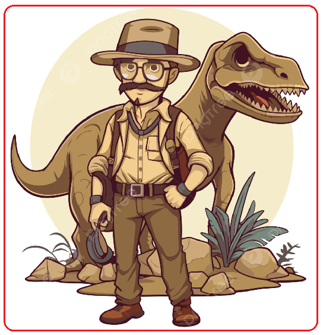

Contacte
Sóc un paleontòleg apassionat per l'estudi
dels dinosaures i la divulgació científica.
Dades personals
- Nom: Dr. Fòssil Juràssic
- Professió: Paleontòleg
- Experiència: 10 anys d'excavacions
Descobriments i publicacions destacades
- Descobriment d'una nova espècie de
teròpode al desert del Gobi (2020)
- Publicació: "Evolució dels sauròpodes al
Juràssic" (Journal of Paleontology, 2018)
- Anàlisi de traces fòssils de dinosaures
a la Patagònia (2023)
Imatges

Institució
Visiteu el nostre museu: Institut Català de Paleontologia
Tornar a la pàgina